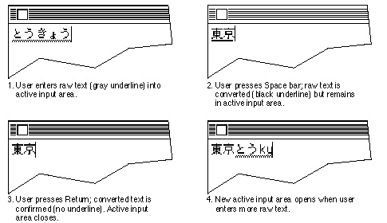
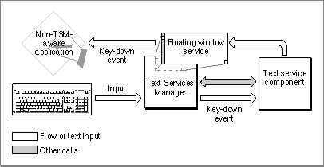
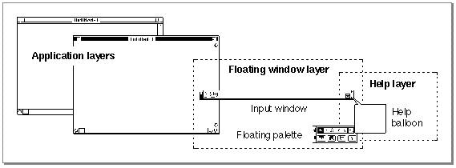

Legacy Document
Important: The information in this document is obsolete and should not be used for new development.
Important: The information in this document is obsolete and should not be used for new development.


The Text Services Manager and Input Methods
Although the Text Services Manager can work with any type of text service component, it provides several features specific to input methods for 2-byte script systems. The Text Services Manager synchronizes the current input method with the current keyboard script. For example, if the user changes from a Japanese to a Chinese font, the application changes the keyboard script to Chinese and the Text Services Manager then switches the current input method from Japanese to Chinese as well. Unlike with other text services, the Text Services Manager opens and closes input methods, and takes care of their menu handling.Inline Input
A principal feature of the Text Services Manager is its support for inline input. Figure 7-4 shows how information flows through the Text Services Manager when a TSM-aware application uses it for inline input. The application passes key-down events to the text service component; the text service component sends text and messages back to the application with Apple events. Events, messages, and requests for service between the application and the text service component all pass through the Text Services Manager.For inline input, the Text Services Manager offers routines that let client applications and text service components communicate about what happens in the active input area--the portion of the screen in which the user enters text and where the text service component displays converted text. The client application and the text service component share control over the active input area.
The active input area is almost like a small window with invisible borders inside of the application's document window. It replaces the insertion point in the document, but it can be any width; it can even occupy more than one entire line of text. Text within the active input area can have its own font and size, different from that of body text. Text within the active input area can even scroll out of sight if there is more text than can fit in the space allotted for it in the active input area.
The application is responsible for determining the location and size of the active input area, and for drawing and highlighting all text within it. The text service component is responsible for accepting user input (as key-down events), for converting input text to final text, and for telling the application what characters to draw--and what characters to accept as confirmed--at every step of the way. The text service component can also instruct the application to scroll certain parts of the active input area into view, if necessary.
The text service component processes the user input, called raw text, as it is entered. The text service component first has the application draw the text on the screen as entered. Then it converts the raw text, translating it from phonetic or syllabic to ideographic or complex syllabic characters. Finally, it confirms the converted text upon user approval of the conversion. By convention in some script systems, a text service component converts text when the user presses the Space bar after entering a sequence of characters, and confirms the converted text when the user presses Return to accept the conversion. See Figure 7-5. (In Korean, conversion happens continuously and automatically, and confirmation happens by convention when the user presses either Return or the Space bar.)
Figure 7-5 Entering, converting, and confirming text in an active input area
 The text service component continually removes the confirmed input from the active input area and sends it to the application for storage in its text buffer. The text service component uses Apple events for this purpose, and for notifying the application of every character (raw, converted, or confirmed) that needs to be drawn or highlighted within the active input area.
In a number of situations, a client application may need to initiate the confirmation of input in progress. For example, if a user switches input methods, makes a menu selection, or selects text outside the active input area, the user has implicitly requested confirmation of the existing text. The client application needs to inform the text service component so it can confirm all text, whether raw or converted, in the active input area. The client application can make that request through a call to the Text Services Manager.
Floating Input Windows
The Text Services Manager also provides a service to facilitate the use of an input window for text entry and conversion when inline input is not supported by the application or not desired by the user. This floating input window is a standard bottomline input window: it usually appears in the lower portion of the screen, although the user can drag it to any location. Once the user's text has been converted correctly in the window, it is sent to the application.The Text Services Manager's floating input window is mainly for use with applications that are not TSM-aware. See Figure 7-4. The input window uses the floating window service, a part of the Text Services Manager. It works this way:
Figure 7-6 How a non-TSM-aware application uses the Text Services Manager
- The Process Manager intercepts key-down events and passes them to the
Text Services Manager.- The Text Services Manager passes them to the appropriate input method
for processing.- The input method then passes the processed text back to the Text Services Manager. The floating window service displays the text in a floating input window.
- When the user is finished with the text, the floating window service passes the processed text back to the client application through standard key-down events
(not Apple events).
 In this way the Text Services Manager can provide an input method text service component for applications that have no knowledge of the text services environment.
TSM-aware applications should normally use inline input. However, the Text Services Manager does allow TSM-aware applications to use a floating input window. Users may prefer bottomline input if the size of the text displayed in the document makes reading the characters difficult.
Floating Utility Windows
Floating windows are useful for more than just text entry. Input methods can use the Text Services Manager floating window service to create utility windows--floating windows that display palettes or present lists of choices to the user. For example, most Japanese input methods let a user set the input mode to either 2-byte Hiragana, 1-byte Hiragana, 2-byte Romaji, or 1-byte Romaji. In the past, users selected these modes from controls inside the input method's input window. Now, since the system provides a standard floating input window for non-TSM-aware applications as well as for TSM-aware applications that request it, input methods should offer mode selection in a separate floating palette. Figure 7-3 on page 7-8 shows an example of a floating palette window used with bottomline input; Figure 7-9 on page 7-33 shows the same palette used with inline input.Figure 7-7 illustrates the window-layer organization provided by the Text Services Manager. A floating window, whether an input window or a utility window, is always in front of all application windows but behind any help balloons.
Figure 7-7 Floating window service layer
